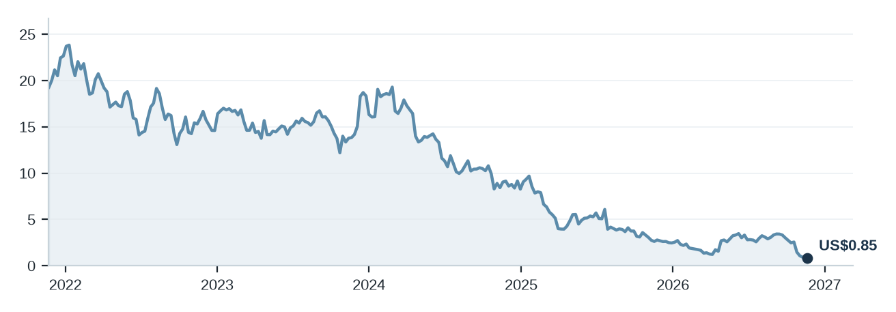
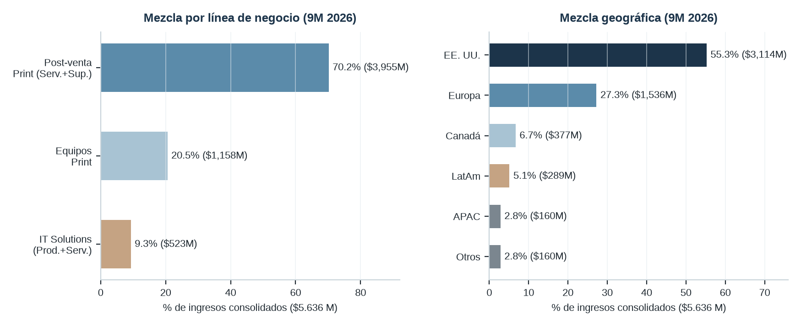
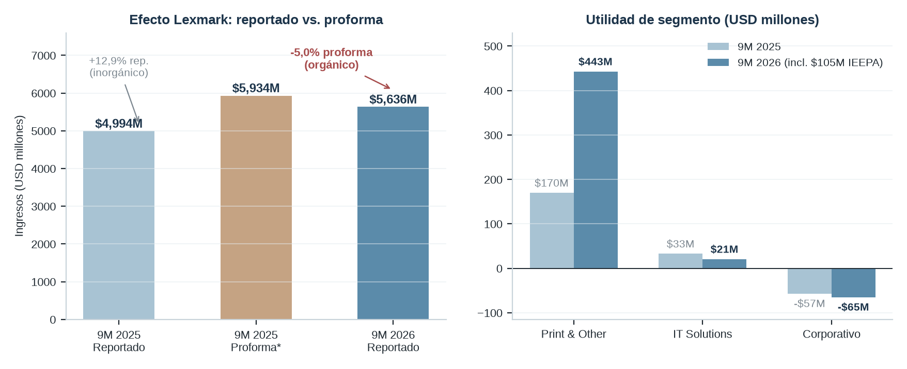
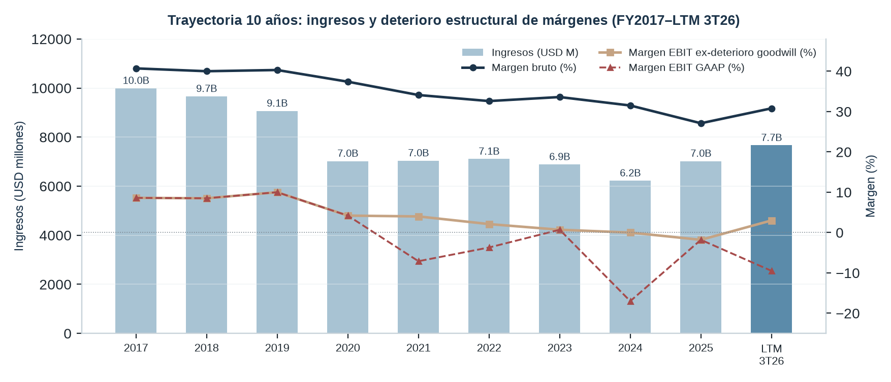
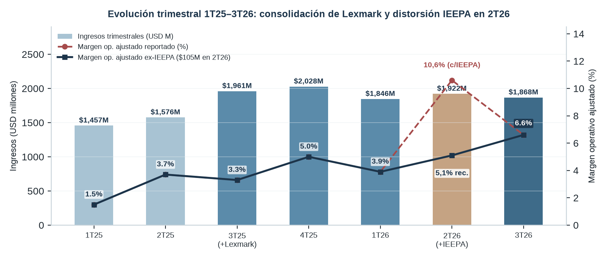
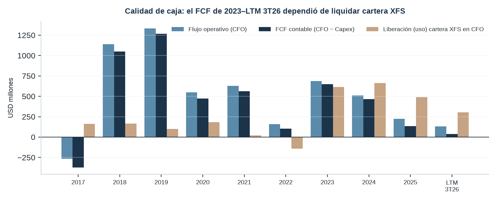
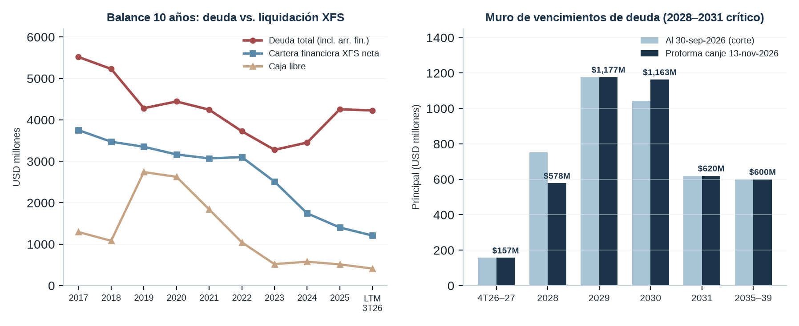
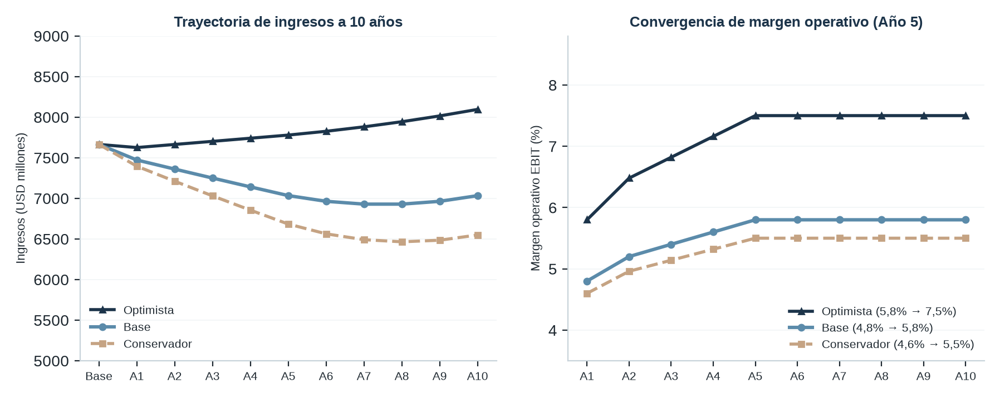
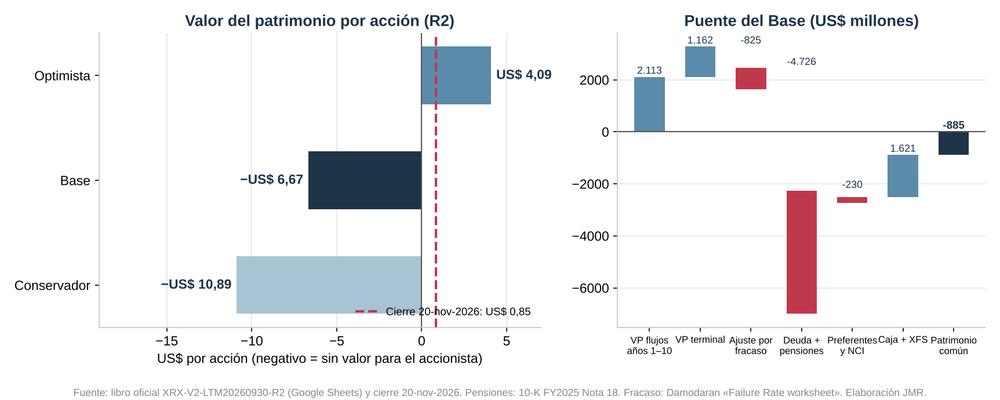
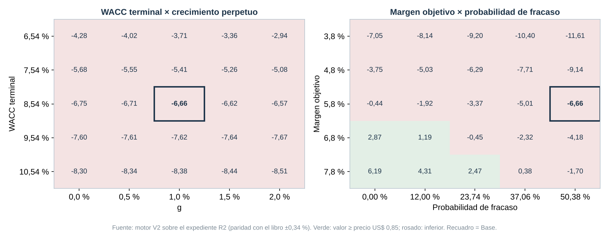

Xerox adquirió Lexmark para duplicar escala en un negocio en declive secular, pero carga $4.228 millones de deuda con calificación CCC+ y cotiza a $0,85. ¿Sobrevive el capital común al muro de vencimientos 2028–2031?
La acción común de Xerox cotiza como una opción apalancada sobre las sinergias de Lexmark y el refinanciamiento de $3.538 millones de deuda entre 2028 y 2031. Con las pensiones restadas como deuda y el riesgo de impago de un emisor CCC, el DCF R2 deja un patrimonio común negativo en el Base (−US$ 6,67 por acción): los $0,85 pagan una opción, no un valor intrínseco.
Xerox Holdings Corporation (NASDAQ: XRX; Norwalk, Connecticut) fabrica e integra equipos de impresión de oficina y producción, servicios gestionados de impresión (MPS) y soluciones de TI. Tras adquirir Lexmark (1-jul-2025) e ITsavvy (nov-2024), sus ingresos LTM al 30-sep-2026 fueron $7.664 millones (90,7 % Print & Other; 9,3 % IT Solutions).
El salto inorgánico encubre una contracción orgánica proforma de −5,0 % en 9M 2026. Con $4.228 millones de deuda, calificación CCC+/Caa2, un déficit de pensiones de $655 millones antes de impuestos y $3.538 millones de vencimientos entre 2028 y 2031, el capital común depende de convertir la cartera XFS ($1.209 millones) y las sinergias de Lexmark en desapalancamiento.

Este informe se elaboró con fines informativos, educativos y de análisis financiero bajo el Modelo JMR V2.0. No constituye asesoría financiera personalizada, recomendación de compra o venta ni oferta de ningún instrumento. Las proyecciones reflejan supuestos explícitos sujetos a incertidumbre sustancial, especialmente en emisores con calificación especulativa (CCC+/Caa2).
Las cifras históricas proceden de documentos presentados ante la SEC por Xerox Holdings Corporation (CIK 0001770450): Forms 10-K FY2017–FY2025 y Form 10-Q 3T26 (5-nov-2026). Precio de referencia: US$ 0,85 al cierre del 20-nov-2026.
Revisión XRX-V2-LTM20260930-R2 (sustituye a R1 del 21-nov-2026). Estado: EN PROCESO (control V03: el patrimonio común del Base es negativo, por lo que no existe precio objetivo válido); sin auditoría independiente ni aprobación del propietario. Corte contable LTM al 30-sep-2026.
Perfil operativa y motor FCFF (fcffsimpleginzu de Damodaran) por fórmulas en el libro XRX-V2-LTM20260930-R2_VALORACION (Google Sheets). R2 resta el déficit de pensiones después de impuestos (US$ 497,8 M; 10-K Nota 18) y aplica la probabilidad de fracaso por calificación de la hoja «Failure Rate worksheet» (CCC/C 50,38 %; B 23,74 %). Paridad con el motor V2 dentro de ±0,5 %. La maquetación reproduce NVIDIA R6 y MercadoLibre R8.
Xerox Holdings Corporation representa uno de los casos más instructivos de valoración corporativa en mercados desarrollados en noviembre de 2026: una franquicia industrial icónica —durante décadas sinónimo de fotocopiado corporativo— atrapada simultáneamente por una erosión secular de su demanda base, una adquisición apalancada de gran escala (Lexmark International, cerrada el 1 de julio de 2025 por aproximadamente $1.500 millones de valor empresa) y un muro de vencimientos de deuda que concentra $3.538 millones entre 2028 y 2031 (proforma tras el canje del 13 de noviembre de 2026). Al cierre del 20 de noviembre de 2026, la acción cotiza en US$ 0,85 —un desplome de 95,7 % en cinco años desde $19,88 en noviembre de 2021—, lo que sitúa la capitalización bursátil en apenas $112,8 millones frente a $4.228 millones de deuda financiera en libros.
Esa desconexión entre un valor empresa superior a los $2.950 millones (descontando caja y cartera financiera XFS) y una capitalización bursátil de $113 millones transforma el análisis de Xerox en un problema clásico de valoración bajo estrés financiero y asimetría de capital. Pequeñas variaciones en el margen operativo sostenible (de apenas 75 a 100 puntos básicos) o en el tratamiento de pasivos fuera del puente estándar (como los $655 millones de déficit neto consolidado de pensiones antes de impuestos) mueven el valor intrínseco por acción desde más de $3,00 hasta cero económico. Por ello, este informe rechaza cualquier atajo por múltiplos simples y descompone con rigor contable el negocio orgánico, la calidad real de las utilidades de 2026 y la prelación exacta de acreedores y accionistas.
Entre noviembre de 2024 y noviembre de 2026, Xerox ejecutó la transformación más agresiva de su balance desde la ruptura con Fujifilm en 2018–2019:
| Fecha | Hito corporativo / financiero | Impacto económico verificado (SEC EDGAR) |
|---|---|---|
| Nov-2024 | Adquisición de ITsavvy | $400 M ($180 M efectivo + $220 M pagarés 2025/2026) para crear el segmento IT Solutions. |
| 1-jul-2025 | Cierre adquisición de Lexmark | ~$1.500 M EV ($749 M pago neto por patrimonio incl. caja adquirida); financiado con bonos 1L 10,25 % (2030) y 2L 13,50 % (2031). |
| 17-feb-2026 | Joint Venture de PI con TPG Angelo Gordon | $450 M ($405 M Term Loan SOFR+8,125 % + $45 M Class A SOFR+11,875 %); regalía 2 % de ventas; amortiza 4,5 % trimestral ($81 M/año) desde 4T26. |
| 31-mar-2026 | Relevo de CEO | Louis J. Pastor (ex-Icahn Enterprises, presidente/COO) sucede a Steven Bandrowczak (8-K 2-abr-2026). |
| 2T 2026 | Recuperación arancelaria IEEPA | Fallo Corte Suprema EE. UU. (feb-2026): Xerox reduce COGS en $105 M (no recurrente) y monetiza cuentas por cobrar por $80 M en efectivo. |
| May–sep-2026 | Campaña activista STARTEEPO | STARTEEPO SICAV y František Bostl acumulan 7,34 % (9,64 M acciones; costo $23,15 M) y piden revisión estratégica de XFS (13D/A 8-sep-2026). |
| 29-oct-2026 | Resultados 3T26, deterioro y rebaja de guía | Deterioro goodwill de $959 M; recorte guía FY26 (OpInc adj. $450–475 M, FCF $50–100 M); suspensión de dividendos comunes y preferentes desde ene-2027. |
| 12–13-nov-2026 | Canje bonos 2028 y salida del CAO | Canje de $173,7 M bonos 5,50 % 2028 por $121,1 M bonos 1L 10,25 % 2030 + 3,87 M acciones (−$52,6 M principal); renuncia del CAO William Twomey efectiva 30-nov-2026. |
Fuente: SEC EDGAR, Forms 10-K FY2025, 10-Q 3T26, 8-K (2026) y Schedule 13D/A (CIK 0001770450).
La pregunta que articula toda nuestra valoración no es si la impresión de oficina volverá a crecer —la evidencia de diez años demuestra que no lo hará—, sino si la escala combinada de Xerox y Lexmark permite generar un margen operativo recurrente cercano al 5,5 %–6,0 % con una contracción orgánica acotada, suficiente para absorber el servicio de deuda de $357 millones anuales de intereses no financieros, retirar pasivos mediante la monetización de la cartera XFS ($1.209 millones) y cruzar el muro de vencimientos 2028–2031 sin que el patrimonio común sea barrido en una reestructuración.
El modelo económico de Xerox se apoya históricamente en la lógica de «navaja y cuchillas» (razor-and-blade): colocar equipos multifunción (MFP) y prensas de producción con márgenes brutos bajos (25 %–30 %), con frecuencia mediante contratos de arrendamiento de tres a cinco años originados a través de Xerox Financial Services (XFS / FITTLE), para capturar después flujos recurrentes de mayor margen en suministros (tóner, piezas), mantenimiento técnico y Servicios Gestionados de Impresión (MPS). En los nueve meses cerrados el 30 de septiembre de 2026 (10-Q 3T26, Nota 3), los ingresos de postventa sumaron $3.955 millones (70,2 % del total) frente a $1.158 millones de ventas de equipos (20,5 %) y $523 millones de IT Solutions (9,3 %).

Desde 2025 la compañía reporta dos segmentos operativos principales:
Uno de los errores analíticos más peligrosos al leer las cifras reportadas de 2025–2026 consiste en confundir la consolidación contable de Lexmark con crecimiento orgánico. Como Lexmark se incorporó a partir del 1 de julio de 2025, los primeros nueve meses de 2026 reflejan nueve meses de Lexmark frente a solo tres meses en 9M 2025. Por ello, los ingresos reportados de 9M 2026 crecieron +12,9 % (de $4.994 M a $5.636 M), gracias a un efecto inorgánico de +19,3 puntos porcentuales y +1,1 pp de tipo de cambio. Sin embargo, sobre la base proforma divulgada por la propia Xerox en el 10-Q 3T26 (p. 48, incluyendo los resultados estimados de Lexmark en 1S 2025, equivalentes a $5.934 M en 9M25), los ingresos consolidados cayeron −5,0 % interanual (−4,1 % en postventa, −4,7 % en equipos y −12,1 % en IT Solutions). Más revelador aún: en el tercer trimestre de 2026 —primer trimestre comparable con 100 % de Lexmark en ambos períodos—, los ingresos bajaron −4,7 % (de $1.961 M a $1.868 M), confirmando que la erosión estructural de alrededor de 4 %–5 % anual continúa intacta.

Históricamente, Xerox financió en su propio balance las compras de equipos de sus clientes mediante arrendamientos de tipo venta (sales-type leases), acumulando $3.752 millones en cuentas por cobrar financieras al cierre de 2017. Bajo la estrategia «Reinvention» iniciada en 2023 y acelerada en 2024–2026 mediante acuerdos de venta recurrente de cartera (forward-flow agreements con terceros financieros como HPS Investment Partners), Xerox ha reducido deliberadamente el balance de XFS desde $3.102 millones en 2022 hasta $1.209 millones netos al 30 de septiembre de 2026 ($36 M facturados + $438 M corto plazo + $735 M largo plazo). Esta estrategia ha liberado $1.918 millones de efectivo acumulado entre FY2023 y 9M2026 dentro del flujo operativo, pero al mismo tiempo reduce los ingresos financieros de XFS y encoge el colchón de activos financieros liquidables hacia 2027–2028.
La historia financiera de una década (FY2017–FY2025 más LTM al 30 de septiembre de 2026) documenta sin ambigüedades la pérdida de calidad estructural del negocio. Entre 2017 y 2024, los ingresos se redujeron un 37,7 % (de $9.991 M a $6.221 M), antes de rebotar artificialmente a $7.664 M LTM por las adquisiciones de ITsavvy y Lexmark. Más grave aún fue la compresión del margen bruto, que descendió desde 40,75 % en 2017 hasta 27,09 % en 2025 (afectado por el ajuste contable de inventario en la compra de Lexmark y aranceles) y 30,81 % en LTM 3T26. El margen operativo GAAP pasó de 8,56 %–9,99 % en 2017–2019 a terreno negativo en cuatro de los últimos cinco años debido a cargos crónicos de reestructuración y tres grandes deterioros de fondo de comercio: −$781 M en 2021, −$412 M en 2022, −$1.055 M en 2024 y −$959 M en 3T 2026 (más de $3.200 millones acumulados en cinco años).

A continuación se presentan los tres estados financieros consolidados históricos de Xerox Holdings Corporation generados directamente desde la base A-1.2 conciliada del expediente (separando los ejercicios fiscales anuales FY2017–FY2025 del corte LTM 2026-09-30, en cifras absolutas y ratios en su unidad natural):
| Concepto | Unidad | FY2017 | FY2018 | FY2019 | FY2020 | FY2021 | FY2022 | FY2023 | FY2024 | FY2025 | LTM 2026-09-30 |
|---|---|---|---|---|---|---|---|---|---|---|---|
| Ingresos totales | USD M | 9.991 | 9.662 | 9.066 | 7.022 | 7.038 | 7.107 | 6.886 | 6.221 | 7.022 | 7.664 |
| Ingresos % variación (ƒ) | % | N/D | -3,29 % | -6,17 % | -22,55 % | 0,23 % | 0,98 % | -3,11 % | -9,66 % | 12,88 % | N/D |
| Costo de ventas | USD M | 5.920 | 5.793 | 5.416 | 4.396 | 4.635 | 4.789 | 4.572 | 4.261 | 5.121 | 5.303 |
| Utilidad bruta (ƒ) | USD M | 4.071 | 3.869 | 3.650 | 2.626 | 2.403 | 2.318 | 2.314 | 1.960 | 1.901 | 2.361 |
| Margen bruto (ƒ) | % | 40,75 % | 40,04 % | 40,26 % | 37,40 % | 34,14 % | 32,62 % | 33,60 % | 31,51 % | 27,07 % | 30,81 % |
| Gastos de venta, generales y administrativos | USD M | 2.514 | 2.379 | 2.085 | 1.851 | 1.718 | 1.760 | 1.696 | 1.537 | 1.654 | 1.667 |
| Investigación y desarrollo | USD M | 424 | 397 | 373 | 311 | 310 | 304 | 229 | 191 | 230 | 258 |
| Otros gastos operativos | USD M | 278 | 273 | 286 | 167 | 874 | 519 | 342 | 1.290 | 145 | 1.163 |
| Utilidad operativa (EBIT) (ƒ) | USD M | 855 | 820 | 906 | 297 | -499 | -265 | 47 | -1.058 | -128 | -727 |
| Margen operativo (ƒ) | % | 8,56 % | 8,49 % | 9,99 % | 4,23 % | -7,09 % | -3,73 % | 0,68 % | -17,01 % | -1,82 % | -9,49 % |
| Ingresos por intereses e inversiones | USD M | 8 | 15 | 16 | 14 | 4 | 11 | 16 | 14 | 14 | 11 |
| Gasto por intereses | USD M | 119 | 114 | 105 | 94 | 96 | 91 | 68 | 119 | 248 | 357 |
| Utilidad antes de impuestos | USD M | 525 | 549 | 822 | 252 | -475 | -328 | -28 | -1.216 | -488 | -1.109 |
| Provisión para impuestos | USD M | 468 | 247 | 179 | 64 | -17 | -3 | -29 | 105 | 541 | 71 |
| Tasa efectiva de impuestos (ƒ) | % | 89,14 % | 44,99 % | 21,78 % | 25,40 % | 3,58 % | 0,91 % | 103,57 % | -8,63 % | -110,86 % | -6,40 % |
| Utilidad neta consolidada | USD M | 207 | 374 | 1.361 | 192 | -455 | -322 | 1 | -1.321 | -1.029 | -1.180 |
| Utilidad neta atribuible a accionistas comunes | USD M | 181 | 347 | 1.339 | 178 | -469 | -336 | -13 | -1.335 | -1.043 | -1.194 |
| Margen neto (ƒ) | % | 1,81 % | 3,59 % | 14,77 % | 2,53 % | -6,66 % | -4,73 % | -0,19 % | -21,46 % | -14,85 % | -15,58 % |
| EBITDA (ƒ) | USD M | 1.382 | 1.346 | 1.336 | 665 | -172 | 5 | 298 | -784 | 203 | -324 |
| Margen EBITDA (ƒ) | % | 13,83 % | 13,93 % | 14,74 % | 9,47 % | -2,44 % | 0,07 % | 4,33 % | -12,60 % | 2,89 % | -4,23 % |
| BPA diluido | USD/acción | 0,71 | 1,38 | 5,74 | 0,84 | -2,56 | -2,15 | -0,09 | -10,75 | -8,25 | -9,20 |
| Acciones promedio ponderado diluidas | acciones M | 256,57 | 251,66 | 233,17 | 211,44 | 183,17 | 156,01 | 149,12 | 124,21 | 126,47 | 129,78 |
Fuente: estados financieros A-1.2 del expediente vigente; importes en millones de USD. ƒ = calculado con fórmula; N/D = no disponible o no calculable. CAPEX y otras salidas conservan la convención de signos de A-1.2.
| Concepto | Unidad | FY2017 | FY2018 | FY2019 | FY2020 | FY2021 | FY2022 | FY2023 | FY2024 | FY2025 | LTM 2026-09-30 |
|---|---|---|---|---|---|---|---|---|---|---|---|
| Efectivo y equivalentes | USD M | 1.293 | 1.081 | 2.740 | 2.625 | 1.840 | 1.045 | 519 | 576 | 512 | 412 |
| Inversiones de corto plazo | USD M | 0 | 0 | 0 | 0 | 0 | 0 | 0 | 0 | 0 | 0 |
| Efectivo total e inversiones de corto plazo (ƒ) | USD M | 1.293 | 1.081 | 2.740 | 2.625 | 1.840 | 1.045 | 519 | 576 | 512 | 412 |
| Cuentas por cobrar comerciales totales (ƒ) | USD M | 1.357 | 1.270 | 1.236 | 883 | 818 | 857 | 850 | 796 | 1.122 | 1.153 |
| Inventarios | USD M | 915 | 829 | 694 | 843 | 696 | 797 | 661 | 695 | 1.016 | 1.063 |
| Activos corrientes totales (ƒ) | USD M | 5.230 | 4.713 | 6.140 | 5.783 | 4.701 | 4.107 | 3.177 | 2.935 | 3.568 | 3.638 |
| Propiedades, planta y equipo netos | USD M | 629 | 498 | 426 | 407 | 358 | 320 | 266 | 251 | 390 | 365 |
| Intangibles netos | USD M | 268 | 220 | 199 | 237 | 211 | 208 | 177 | 236 | 921 | 827 |
| Crédito mercantil (goodwill) | USD M | 3.930 | 3.858 | 3.900 | 4.071 | 3.287 | 2.820 | 2.747 | 1.937 | 2.222 | 1.273 |
| Activos totales (ƒ) | USD M | 15.946 | 14.874 | 15.047 | 14.741 | 13.223 | 11.543 | 10.008 | 8.365 | 9.823 | 8.642 |
| Cuentas por pagar | USD M | 1.108 | 1.073 | 1.053 | 983 | 1.069 | 1.331 | 1.044 | 1.023 | 1.498 | 1.484 |
| Pasivos corrientes totales (ƒ) | USD M | 2.741 | 3.251 | 3.435 | 2.478 | 2.829 | 3.330 | 2.779 | 2.619 | 3.222 | 3.201 |
| Deuda de corto plazo | USD M | 282 | 961 | 1.049 | 394 | 650 | 860 | 567 | 585 | 231 | 157 |
| Deuda de largo plazo | USD M | 5.235 | 4.269 | 3.233 | 4.050 | 3.596 | 2.866 | 2.710 | 2.814 | 4.016 | 4.063 |
| Porción corriente de arrendamientos | USD M | N/D | N/D | N/D | N/D | N/D | N/D | N/D | 15 | 5 | 5 |
| Arrendamientos (largo plazo) | USD M | N/D | N/D | N/D | N/D | N/D | N/D | N/D | 53 | 8 | 8 |
| Pasivos totales (ƒ) | USD M | 10.439 | 9.621 | 9.239 | 8.931 | 8.556 | 7.966 | 7.236 | 7.061 | 9.150 | 9.095 |
| Patrimonio de accionistas comunes | USD M | 5.256 | 5.005 | 5.587 | 5.592 | 4.436 | 3.343 | 2.538 | 1.076 | 444 | -683 |
| Patrimonio total (ƒ) | USD M | 5.507 | 5.253 | 5.808 | 5.810 | 4.667 | 3.577 | 2.772 | 1.304 | 673 | -453 |
| Deuda total (corto + largo + arrendamientos) (ƒ) | USD M | 5.517 | 5.230 | 4.282 | 4.444 | 4.246 | 3.726 | 3.277 | 3.452 | 4.255 | 4.228 |
| Deuda neta (ƒ) | USD M | 4.224 | 4.149 | 1.542 | 1.819 | 2.406 | 2.681 | 2.758 | 2.876 | 3.743 | 3.816 |
Fuente: estados financieros A-1.2 del expediente vigente; importes en millones de USD. ƒ = calculado con fórmula; N/D = no disponible o no calculable. CAPEX y otras salidas conservan la convención de signos de A-1.2.
| Concepto | Unidad | FY2017 | FY2018 | FY2019 | FY2020 | FY2021 | FY2022 | FY2023 | FY2024 | FY2025 | LTM 2026-09-30 |
|---|---|---|---|---|---|---|---|---|---|---|---|
| Utilidad neta | USD M | 207 | 374 | 1.361 | 192 | -455 | -322 | 1 | -1.321 | -1.029 | -1.180 |
| Depreciación y amortización | USD M | 527 | 526 | 430 | 368 | 327 | 270 | 251 | 274 | 331 | 403 |
| Compensación basada en acciones | USD M | 52 | 57 | 50 | 42 | 54 | 75 | 54 | 52 | 45 | 41 |
| Flujo de efectivo operativo (ƒ) | USD M | -267 | 1.140 | 1.333 | 548 | 629 | 159 | 686 | 511 | 224 | 131 |
| Inversiones de capital (CAPEX) | USD M | -105 | -90 | -65 | -74 | -68 | -57 | -37 | -44 | -91 | -94 |
| Flujo de efectivo de inversión (ƒ) | USD M | 165 | -29 | 2.148 | -246 | -85 | -78 | -5 | -198 | -698 | -61 |
| Flujo de efectivo de financiación (ƒ) | USD M | -985 | -1.301 | -1.834 | -416 | -1.310 | -822 | -1.202 | -271 | 404 | -72 |
| Recompras de acciones comunes | USD M | 0 | -700 | -600 | -300 | -888 | -113 | -544 | -8 | 0 | 0 |
| Dividendos pagados a accionistas comunes | USD M | -291 | -269 | -243 | -230 | -206 | -174 | -165 | -141 | -71 | -30 |
| Flujo de caja libre (CFO − CAPEX) (ƒ) | USD M | -372 | 1.050 | 1.268 | 474 | 561 | 102 | 649 | 467 | 133 | 37 |
| Margen de flujo libre (ƒ) | % | -3,72 % | 10,87 % | 13,99 % | 6,75 % | 7,97 % | 1,44 % | 9,42 % | 7,51 % | 1,89 % | 0,48 % |
| Cambio neto en efectivo (ƒ) | USD M | N/D | -212 | 1.659 | -115 | -785 | -795 | -526 | 57 | -64 | N/D |
Fuente: estados financieros A-1.2 del expediente vigente; importes en millones de USD. ƒ = calculado con fórmula; N/D = no disponible o no calculable. CAPEX y otras salidas conservan la convención de signos de A-1.2.
Evaluar la rentabilidad recurrente real de Xerox en 2026 exige limpiar cuatro distorsiones materiales documentadas en las notas del 10-Q 3T26:
| Concepto (USD millones) | 9M 2026 | LTM 3T26 | Tratamiento económico en nuestra valoración |
|---|---|---|---|
| EBIT GAAP reportado | −746 | −727 | Base contable oficial en JMR Estados y libros SEC. |
| (+) Deterioro de fondo de comercio (3T26) | +959 | +959 | Partida no monetaria única; se excluye del margen prospectivo. |
| (+) Amortización de intangibles adquiridos (Lexmark/ITsavvy) | +91 | +125 | Se vigila su peso, pero refleja costo de capital de adquisiciones. |
| (+) Reestructuración y transformación («Reinvention») | +95 | +140 | Recurrencia crónica: Xerox registró reestructuración en 10 de los últimos 10 años; NO se ignora por completo. |
| (−) Recuperación arancelaria IEEPA en COGS (2T26) | −105 | −105 | No recurrente: fallo judicial único; se resta para hallar margen sostenible. |
| EBIT operativo ajustado recurrente (ex-IEEPA) | 294 (5,2 %) | ~365–392 (~4,8 %–5,1 %) | Coincide con guía FY26 ajustada ($450–475 M) menos $105 M IEEPA = $345–370 M (4,5 %–4,9 %). |
Fuente: Form 10-Q 3T26 (pp. 2, 32, 48–54) y presentación de resultados 3T26 (29-oct-2026). El margen ajustado reportado de 2T26 (10,6 %) se reduce a 5,1 % al excluir los $105 M de IEEPA.

La calidad del flujo de caja libre es el segundo punto crítico de diagnóstico. En LTM 3T26, Xerox generó $131 millones de flujo operativo y $37 millones de FCF contable (CFO − Capex de $94 M), tras producir $133 M en FY2025, $467 M en FY2024 y $649 M en FY2023. Sin embargo, el estado de flujos revela que el principal contribuyente a esa caja no fue el resultado neto operativo, sino la liquidación progresiva de la cartera financiera XFS: $614 M en 2023, $663 M en 2024, $489 M en 2025 y $303 M en LTM 3T26 (+$152 M en 9M26 frente a +$338 M en 9M25). Excluyendo la monetización de cuentas por cobrar financieras, el FCF orgánico consolidado de Xerox fue negativo durante 2024–LTM 3T26, absorbido por intereses no financieros ($357 M LTM), costos de reestructuración y gastos de integración de Lexmark.

En el balance al 30 de septiembre de 2026, la deuda en libros totaliza $4.220 millones ($157 M corriente + $4.063 M largo plazo; principal contractual $4.348 M y valor razonable de mercado de apenas $2.893 M según la Nota 14 del 10-Q 3T26, lo que implica un descuento promedio de 33,5 % sobre par, con los bonos no garantizados de Holdings cotizando en torno a 49–55 centavos por dólar). Sumando $8 millones de arrendamientos financieros ASC 842 (10-K Nota 11), la deuda financiera consolidada asciende a $4.228 millones. La compañía asigna analíticamente $1.058 millones de esa deuda al financiamiento de la cartera XFS (apalancamiento 7:1 sobre $1.209 M de cuentas por cobrar financieras), dejando $3.170 millones de deuda corporativa «core». En el puente EV → Patrimonio, restamos la totalidad de los $4.228 M de deuda y acreditamos explícitamente los $1.209 M de cartera XFS en activos no operativos (junto con $412 M de caja libre, excluyendo $118 M de caja restringida), evitando así cualquier doble conteo económico.

| Entidad / Instrumento | Prelación / Garantía | Tasa / Cupón | 30-sep-2026 | Proforma 13-nov |
|---|---|---|---|---|
| Xerox Holdings · Bonos 2028 | Senior no garantizado (Holdings) | 5,50 % fijo | $556 M | $382 M |
| Xerox Holdings · Bonos 2029 | Senior no garantizado (Holdings) | 8,875 % fijo | $500 M | $500 M |
| Xerox Holdings · Bonos 2030 | Senior no garantizado (Holdings) | 13,00 % fijo | $250 M | $250 M |
| Xerox Holdings · Convertibles 2030 | Senior no garantizado (conv. $20,84) | 3,75 % fijo | $392 M | $392 M |
| Xerox Corp. · Term Loan B 2029 | Garantizado 1.er gravamen (1L) | SOFR + 4,00 % | ~$668 M | ~$668 M |
| Xerox Corp. · Bonos 1L 2030 | Garantizado 1.er gravamen (1L) | 10,25 % fijo | $400 M | $521 M |
| Xerox Corp. · Bonos 2L 2031 | Garantizado 2.º gravamen (2L) | 13,50 % fijo | $494 M | $494 M |
| XRX Brandco (JV TPG IP) · 2031 | Colateral PI (amort. 4,5 % trim.) | SOFR + 8,125 % / 11,875 % | $450 M | $450 M |
| Xerox Corp. · Bonos 2035 y 2039 + otros | Senior / líneas locales | 4,80 % y 6,75 % | ~$638 M | ~$638 M |
| Total principal / Valor libros (+ $8 M arr. fin.) | Valor razonable 10-Q Nota 14: $2.893 M | Promedio ~8,8 %–9,5 % | $4.348 M ($4.228 M) | $4.295 M |
Fuente: Form 10-K FY2025 Nota 15 (p. 129–130), Form 10-Q 3T26 Notas 12 y 14, y Form 8-K 13-nov-2026.
La alta dirección de Xerox ha atravesado una renovación completa en los últimos doce meses. El 31 de marzo de 2026 (Form 8-K del 2 de abril de 2026), Louis J. Pastor (41 años), hasta entonces presidente y COO y anteriormente abogado general adjunto en Icahn Enterprises, fue nombrado CEO y miembro del consejo en sustitución de Steven Bandrowczak. Pastor conoce las entrañas legales y de transformación de Xerox desde 2018 y diseñó tanto la reestructuración «Reinvention» como la transacción de Lexmark y la JV de propiedad intelectual con TPG Angelo Gordon. Lo acompaña como CFO Charles (Chuck) Butler (nombrado en noviembre de 2025), quien a partir del 30 de noviembre de 2026 deberá asumir además interinamente como Principal Accounting Officer tras la renuncia del CAO William Twomey anunciada el 12 de noviembre de 2026 (Form 8-K). Esta última salida —sumada al aviso de presentación tardía NT 10-K de marzo de 2026 antes de radicar el informe anual FY2025— constituye una bandera amarilla sobre la carga operativa y de control contable que implica integrar simultáneamente Lexmark, ITsavvy, una VIE de propiedad intelectual y múltiples canjes de deuda.
En términos de alineación e incentivos (Proxy Statement DEF 14A del 7 de abril de 2026 y Form 8-K del 2 de abril de 2026), la carta oferta de Pastor establece un salario base de $900.000, bono anual objetivo del 150 % ($1,35 M) y una adjudicación objetivo de incentivos a largo plazo (LTI) de $6,0 millones en 2026. Con la acción en $0,85 y la capitalización en $113 millones, un único paquete anual de LTI para el CEO representa más del 5 % del valor de mercado total de la compañía, lo que expone a los accionistas minoritarios a dilución elevada si las concesiones en acciones se liquidan en títulos a precios deprimidos. Al corte del proxy, Pastor mantenía 260.133 acciones directas (444.647 en interés total) y Butler 0 acciones.
El diagnóstico de asignación de capital de la última década es inequívocamente negativo. Entre 2018 y 2023, Xerox distribuyó más de $2.600 millones entre dividendos y recompras de acciones a precios entre $15 y $35 por acción (incluyendo la recompra de la participación de Carl Icahn en 2023), consumiendo el colchón de $2.740 millones de efectivo obtenido por la venta de su participación en Fuji Xerox en 2019. Cuando la compañía decidió girar hacia el crecimiento inorgánico en 2024–2025 (ITsavvy por $400 M y Lexmark por ~$1.500 M EV), su balance ya carecía de liquidez excedente y debió financiarse con deuda garantizada de alto cupón (10,25 % primer gravamen y 13,50 % segundo gravamen) y, en febrero de 2026, pignorando la propia propiedad intelectual de la marca Xerox en una JV con TPG Angelo Gordon por $450 M (a SOFR+8,125 % / +11,875 % y costos de transacción de $54 M).
Recién en octubre de 2026 el consejo tomó la medida de preservación de liquidez largamente postergada: suspender los dividendos de acciones comunes y preferentes Serie A a partir de enero de 2027 (ahorro de caja de ~$28 M/año; los dividendos preferentes del 8 % continúan acumulándose como pasivo preferente). En paralelo, la recompra con descuento de $200 M de deuda en 9M 2026 (a ~50,5 centavos por dólar) y el canje del 13 de noviembre de 2026 (−$52,6 M de principal a cambio de 3,87 M de acciones y mayor cupón) muestran un giro tardío pero racional hacia la gestión de pasivos (liability management).
Dos accionistas definen la gobernanza actual:
Xerox compite en dos arenas con dinámicas muy distintas pero igualmente exigentes. En impresión de oficina, producción y MPS (91 % de ingresos), el mercado global es un oligopolio consolidado donde conviven HP Inc., Canon, Ricoh, Konica Minolta, Kyocera, Brother y Epson. Aunque las barreras de entrada para nuevos fabricantes son altas (propiedad intelectual en motores de impresión, redes globales de técnicos de campo y financiación de flotas), la amenaza de sustitutos digitales —firma electrónica, flujos en la nube, plataformas colaborativas e inteligencia artificial documental— comprime estructuralmente la demanda agregada de páginas impresas año tras año. Cuando el pastel se encoge entre 3 % y 5 % anual, la rivalidad por renovar contratos corporativos de MPS intensifica la presión sobre precios y reduce el margen bruto de toda la industria.
En IT Solutions (9 % de ingresos), el mercado está sumamente fragmentado (CDW, Insight Enterprises, Connection, SHI, integradores regionales y proveedores de nube). Las barreras de entrada son bajas, los márgenes de reventa de hardware son estrechos (4 %–5 % operativos) y el éxito exige escala logística, alianzas preferentes con hiperescaladores y retención de fuerza comercial especializada. La caída de −18,9 % de IT Solutions en el 3T 2026 confirma que Xerox aún carece de ventaja competitiva diferenciada en este segmento.
| Compañía | Enfoque principal | Ingresos anuales | Margen op. | Cap. bursátil | Solidez de balance / Calificación |
|---|---|---|---|---|---|
| Xerox (XRX) | Impresión A3/A4 (Lexmark), MPS, IT Solutions | $7,66 B (LTM) | ~4,8 % rec.* | $0,11 B | Muy apalancado ($4,23 B deuda; S&P CCC+ / Moody's Caa2) |
| HP Inc. (HPQ) | Sistemas personales (PC) e Impresión (A4/consumibles) | ~$54 B | ~7,5 %–8,0 % | ~$25,7–26,0 B | Grado de inversión (BBB); fuerte generación orgánica de FCF |
| Canon (7751 / CAJPY) | Impresión, cámaras sin espejo, equipos médicos y semiconductores | ~$31 B (FY25) | ~9,8 % | ~$22–24 B | Balance conservador; diversificación en imagen e industrial |
| Ricoh (7752 / RICOY) | Equipos de oficina, servicios digitales de lugar de trabajo | ~$15–16 B | ~3,5 %–4,5 % | ~$5,54 B | Apalancamiento moderado; transición avanzada a servicios digitales |
Fuente: SEC EDGAR (XRX 10-Q 3T26), reportes corporativos y datos de mercado a noviembre de 2026 (Stockrow, GNG Research, QAI, Investing.com). *Margen operativo ajustado recurrente ex-IEEPA y ex-goodwill.
Desde una óptica estrictamente industrial, la fusión con Lexmark tiene lógica defensiva: Xerox era históricamente fuerte en multifunción A3 corporativo y prensas de producción, pero dependía de terceros (incluida Fujifilm) para gran parte de su línea A4; Lexmark aporta tecnología propia de motores A4, liderazgo en verticales de impresión pesada (retail, salud, logística) y solapamiento significativo en cadena de suministro, I+D y oficinas administrativas, lo que sustenta la meta revisada de ≥$350 millones en sinergias brutas anuales hacia 2027 ($146 M ya alcanzados en tasa anualizada en 2025, con objetivo de $300 M a cierre de 2026). Sin embargo, el foso económico sigue siendo estrecho y en erosión: la fragilidad financiera de Xerox (calificación CCC+) puede incluso convertirse en desventaja comercial en licitaciones multianuales de grandes corporaciones y gobiernos que evalúan la solvencia a cinco años de sus proveedores de servicios gestionados.
Dentro del ciclo de vida corporativo (introducción, crecimiento, madurez, declive/reestructuración), Xerox se encuentra inequívocamente en una fase avanzada de madurez y contracción secular combinada con reestructuración de balance. Las adquisiciones de ITsavvy y Lexmark buscaron comprar tiempo y escala para sostener la base de flujo de caja durante la transición, pero al haberse financiado mayoritariamente con deuda de alto costo, colocaron a la compañía en una carrera contra el reloj entre 2026 y 2028: debe capturar las sinergias de Lexmark, estabilizar IT Solutions y monetizar los activos no esenciales antes de afrontar el bloque de vencimientos de 2028–2030.
El entorno macroeconómico de finales de 2026 resulta particularmente hostil para emisores altamente apalancados con exposición manufacturera global:
^TNX) cerró el 20 de noviembre de 2026 en 4,912 %.La divergencia entre la valoración bursátil y el mercado de crédito revela dónde reside el consenso real. A $0,85 por acción, Xerox cotiza en mínimos multianuales (−76,5 % frente a su máximo de cierre de 52 semanas de $3,62 y −95,7 % en 5 años), con el mercado accionario tratando al capital común como un warrant fuera o al borde del dinero. A su vez, la Nota 14 del 10-Q 3T26 documenta que el valor razonable de la deuda total de $4.348 M de principal era de solo $2.893 M al 30 de septiembre de 2026; los bonos senior no garantizados de Xerox Holdings (como los 5,50 % 2028) se negociaban cerca de 49–55 % de su valor par, llevando a S&P Global a rebajar temporalmente a Xerox a Selective Default (SD) en junio de 2026 tras las recompras bajo par y mantenerla posteriormente en CCC+ con perspectiva negativa (Moody's Caa2). Cuando el crédito cotiza a precios de estrés, el capital común solo logra revalorizarse de forma sostenible si los bonos regresan primero hacia 80–90 centavos por dólar.
| Categoría | Riesgo específico (evidencia 10-K / 10-Q / 8-K) | Probabilidad | Impacto patrimonial |
|---|---|---|---|
| Refinanciación y liquidez | $578 M vencen en 2028, $1.177 M en 2029, $1.163 M en 2030 y $620 M en 2031 (proforma nov-2026), más amortización trimestral de 4,5 % ($81 M/año) de la JV TPG desde 4T26. | Alta | Crítico (existencial) |
| Pasivos por pensiones | Déficit neto consolidado de $655 M pre-tax al 31-dic-2025 (EE. UU. −$718 M, No-EE. UU. +$242 M sobre-fondeado, salud jubilados −$179 M; 10-K Nota 18). Aportes de caja anuales estimados ~$100 M+. | Alta | Alto (−$3,75/acc. si se deduce del EV) |
| Declive secular acelerado | Caída orgánica proforma superior al −5 % anual por trabajo híbrido, digitalización IA y pérdida de cuentas ante competidores con mejor calificación crediticia. | Media–Alta | Alto (apalancamiento operativo negativo) |
| Integración de Lexmark | No alcanzar los ≥$350 M de sinergias brutas o sufrir costos de reestructuración superiores a lo previsto (ya crónicos durante 10 años). | Media | Alto (±100 pb de margen objetivo = ±US$ 2,48 por acción) |
| Colateralización y covenants | La JV TPG (XRX Brandco) controla propiedad intelectual crítica bajo un SSLA con regalía de 2 % y covenants de cobertura de activos y ventas mínimas; un incumplimiento revocaría licencias tras 90 días. | Media | Crítico |
| Deterioro de IT Solutions | Ingresos −18,9 % en 3T26 y utilidad de segmento cayendo de $33 M a $21 M en 9M26; riesgo de futuro deterioro de goodwill en esta unidad. | Media–Alta | Moderado–Alto |
| Dilución patrimonial | Canjes de deuda por acciones (3,87 M emitidas el 13-nov-2026, +2,9 %), concesiones LTI ejecutivas a precios deprimidos y potencial renegociación de preferentes Serie A ($180 M liq.). | Alta | Moderado–Alto |
| Control interno y gobernanza | Presentación tardía NT 10-K en mar-2026 y renuncia del CAO William Twomey efectiva el 30-nov-2026 (CFO como PAO interino). | Media | Moderado |
Fuente: Form 10-K FY2025 (Notas 15, 18 y 21), Form 10-Q 3T26 (Notas 1, 12, 14 y 22) y Forms 8-K (2026).
Un matiz técnico fundamental que el inversor minorista suele pasar por alto es la subordinación estructural dentro del grupo Xerox. Las acciones comunes cotizan en Xerox Holdings Corporation (la matriz), donde también residen los bonos no garantizados (5,50 % 2028, 8,875 % 2029, 13,00 % 2030 y convertibles 3,75 % 2030). En contraste, los activos operativos, la cartera XFS y la propiedad intelectual han sido progresivamente pignorados a favor de acreedores de primer y segundo gravamen en Xerox Corporation (Term Loan B, bonos 1L 10,25 % 2030 —ampliados en +$121 M en nov-2026—, bonos 2L 13,50 % 2031) y de la entidad consolidada XRX Brandco Holdings LLC (JV TPG de $450 M). Bajo el acuerdo SSLA (10-Q 3T26 Nota 1, p. 10–11), un evento de incumplimiento podría permitir a la JV terminar las licencias de propiedad intelectual contribuidas con apenas 90 días para liquidar inventario. En un escenario de estrés, cada ejercicio de liability management que sustituye deuda no garantizada de Holdings por deuda garantizada de primer gravamen reduce el valor recuperable residual para los accionistas comunes.
A diferencia de empresas con caja neta donde el peor escenario es un crecimiento lento, en Xerox el riesgo de pérdida permanente del 100 % del capital común es concreto y cuantificable. Identificamos tres rutas realistas hacia la destrucción patrimonial:
Nota metodológica: las pruebas usan el mismo motor FCFF sobre la base R2 (pensiones restadas y fracaso CCC); no sustituyen los tres escenarios oficiales del libro.
| Prueba sobre el Base R2 | US$ por acción | Valor económico |
|---|---|---|
| Base R2 (referencia) | −US$ 6,67 | US$ 0,00 |
| Recorte de 15 % en la realización de la cartera XFS | −US$ 8,03 | US$ 0,00 |
| Probabilidad de fracaso con recuperación de 25 % | −US$ 9,77 | US$ 0,00 |
| Declive operativo acelerado (−5,0 % / −4,5 %, margen 4,0 %) | −US$ 11,89 | US$ 0,00 |
| Muro 2028–2029 (WACC +200 pb) | −US$ 9,72 | US$ 0,00 |
Fuente: cálculos ilustrativos no oficiales con el motor V2. El capital común tiene responsabilidad limitada (piso económico US$ 0,00).
Los inversores constructivos —encabezados públicamente por el fondo activista checo STARTEEPO SICAV (7,34 % del capital, costo promedio ~$2,40)— articulan cinco argumentos concretos:
La postura escéptica —respaldada por las agencias calificadoras (S&P CCC+ Negativa, Moody's Caa2) y el mercado de bonos— ofrece contrapesos formidables:
Aplicando la metodología calibrada del Modelo JMR V2.0 (motor fcffsimpleginzu, perfil operativa), cada supuesto operativo y financiero del libro oficial se vincula directamente a evidencia primaria del 10-K FY2025 y 10-Q 3T26:
Input sheet!B61=Yes, enlazado a JMR Estados!L44). Esto mantiene la tasa efectiva en 0 % mientras se absorben los NOL en años 1–5 y converge linealmente hacia la tasa marginal de 24 % en año 10.B16=Yes), el activo de investigación asciende a $475,0 M, la amortización a $216,7 M y el ajuste histórico al EBIT a +$41,3 M (+54 pb); manteniendo fijos nuestros márgenes prospectivos explícitos, el impacto sobre el valor Base fue exactamente $0,00 en la prueba de R1 ($3,3121 vs. $3,3121), y no cambia en R2. Mantenemos B16=No porque gran parte del RD&E es ingeniería de mantenimiento de hardware maduro y las cohortes 2023–2025 tienen discontinuidad contable por la compra de Lexmark. Los arrendamientos financieros ($8 M) están sumados en deuda ($4.228 M); los operativos ($327 M) siguen como gasto en EBIT (B17=No) sin doble conteo.Cost of capital worksheet calcula el WACC inicial exclusivamente por fórmulas: tasa libre 5,15 % (convención biblioteca V2 nov-2026; UST 10a 4,912 % el 20-nov-2026), ERP maduro 3,387 %, ERP ponderado por regiones operativas 9M26 = 4,123 %, beta desapalancada Office Equipment & Services (US) = 1,0384 (beta apalancada matemática de 25,65 por razón D/E de mercado de 31,2× sobre $112,8 M de capitalización y $3.518 M de MV de deuda), y calificación real Caa/CCC (spread +8,85 % → costo de deuda pre-tax 14,00 %, post-tax 10,64 %), produciendo un WACC inicial de 13,75 % que converge en años 6–10 a 8,537 % (B45=No). En el escenario Conservador asignamos adicionalmente una probabilidad explícita de fracaso de 12 % con recuperación de 50 % del valor operativo (B51=Yes, B52=12 %), documentada transparentemente sin ajustes ocultos.| Supuesto del modelo (fcffsimpleginzu) | Conservador | Base | Optimista |
|---|---|---|---|
| Crecimiento de ingresos · Año 1 | −3,5 % | −2,5 % | −0,5 % |
| Crecimiento compuesto · Años 2–5 | −2,5 % | −1,5 % | +0,5 % |
| Crecimiento terminal (Año 10+, override B67=Yes) | +1,0 % | +1,0 % | +1,0 % |
| Margen operativo EBIT · Año 1 | 4,6 % | 4,8 % | 5,8 % |
| Margen operativo EBIT objetivo (Año 5) | 5,5 % | 5,8 % | 7,5 % |
| Sales-to-Capital (Años 1–5 y 6–10) | 3,0× | 2,8× | 2,5× |
| ROIC terminal (Año 10+) | 8,00 % | 8,54 % (= WACCt) | 9,50 % |
| WACC inicial (fórmulas · rating Caa/CCC) | 13,75 % | 13,75 % | 13,75 % |
| WACC terminal (rf 5,15 % + ERP maduro 3,387 %) | 8,54 % | 8,54 % | 8,54 % |
| Tasa impositiva inicial / marginal · NOL inicial | 0 % → 24 % · $1.600 M | 0 % → 24 % · $1.600 M | 0 % → 24 % · $1.600 M |
| Probabilidad explícita de fracaso (recup. 50 % EV) | 12,0 % | 0,0 % | 0,0 % |
| Margen de seguridad (MOS · exclusivo sobre Base) | N/A | 35,0 % | N/A |
Fuente: libro oficial XRX-V2-LTM20260930-R1_VALORACION.xlsx (hojas JMR Escenarios, Input sheet y Cost of capital worksheet).

Cada cifra del libro se justifica con evidencia del emisor, su contraste con la historia de la empresa y la contraevidencia que la debilita. Las cifras de contraste se calculan con los estados del expediente XRX-V2-LTM20260930-R2 y las pruebas de coherencia, con el mismo motor V2 que reproduce el libro (paridad 0,000 %). Esta sección no modifica ningún supuesto ni valor (2026-11-22).
| Supuesto | Conservador | Base | Optimista | Contraste observado |
|---|---|---|---|---|
| Crecimiento año 1 | -3,5 % | -2,5 % | -0,5 % | LTM +9,1 % sobre FY; último FY 12,9 % |
| Crecimiento anual años 2–5 | -2,5 % | -1,5 % | 0,5 % | CAGR 3 años -0,4 %; 5 años 0,0 % |
| Margen operativo año 1 | 4,6 % | 4,8 % | 5,8 % | Reportado LTM -9,5 % |
| Margen objetivo (año de convergencia) | 5,5 % (año 5) | 5,8 % (año 5) | 7,5 % (año 5) | Promedio 5 FY -5,8 %; rango -17,0 % a 10,0 % |
| Ventas/capital años 1–5 | 3,00× | 2,80× | 2,50× | Incremental 3 años no significativo (recompras, adquisiciones o reclasificación de deuda) |
| Ventas/capital años 6–10 | 3,00× | 2,80× | 2,50× | — |
| ROIC terminal | 8,0 % | 8,5 % | 9,5 % | ROIC contable -21,7 % |
| WACC inicial → terminal | 13,75 % → 8,54 % | 13,75 % → 8,54 % | 13,75 % → 8,54 % | Tasa libre 5,15 %; prima madura 3,387 % |
| Crecimiento terminal (g) | 1,0 % | 1,0 % | 1,0 % | Inferior a la tasa libre |
| Tasa marginal | 24,0 % | 24,0 % | 24,0 % | Efectiva 0,0 % |
| Probabilidad de fracaso | 50 % | 50 % | 24 % | — |
| Valor por acción | US$-10,89 | US$-6,66 | US$4,11 | Precio US$0,85 |
Fuente: libro oficial y expediente XRX-V2-LTM20260930-R2; cálculos de contraste propios con los estados del expediente. Ventas/capital incremental = Δventas / Δ(patrimonio + deuda − caja) en tres años; ROIC contable = EBIT × (1 − tasa efectiva) / capital invertido.
Escenario Conservador. La caída orgánica se acelera, las sinergias de Lexmark no se materializan y el muro de vencimientos 2028–2029 obliga a reestructurar la deuda (fracaso CCC 50,38 % con recuperación de 25 %).
Escenario Base. Xerox estabiliza gradualmente la caída orgánica tras integrar Lexmark, captura una parte razonable de las sinergias y gestiona el muro de vencimientos.
Escenario Optimista. IT Solutions y la venta cruzada A4/A3 devuelven el crecimiento a cero y las sinergias elevan el margen a 7,5 %.
Crecimiento del año 1. −2,5 % Base: parte de US$7.664 M LTM (guía FY2026 ~US$7.600 M) y modera el −5,0 % orgánico proforma de 9M26 por venta cruzada y recuperación parcial de IT Solutions.
Crecimiento de los años 2–5. −1,5 % compuesto, convergiendo a +1,0 % en el año 10: declive secular de la impresión de oficina compensado parcialmente por servicios.
Margen operativo del año 1. 4,8 %: punto medio de la guía FY2026 recurrente sin aranceles IEEPA (4,5–4,9 %). El EBIT GAAP LTM (−9,5 %) incluye US$959 M de deterioro no monetario.
Margen objetivo. 5,8 % al año 5: captura neta de ~40–50 % de las sinergias de Lexmark (≥ US$350 M brutas) tras erosión de volumen.
Eficiencia de la reinversión (ventas/capital). 2,8× en los años 1–10: modelo mixto de manufactura y servicios con capex de ~1,2 % de ventas; con ingresos decrecientes, la fórmula libera capital.
ROIC terminal. 8,537 % (= WACC terminal): sin ventaja competitiva sostenible a perpetuidad.
Costo de capital. Fórmulas en «Cost of capital worksheet»: calificación Caa/CCC (S&P CCC+ negativa; Moody’s Caa2), costo de deuda 14 % antes de impuestos, beta desapalancada 1,038 (Office Equipment), ERP ponderada 4,12 %. WACC inicial 13,75 % → 8,54 %.
Impuestos. Marginal 24 %; efectiva 0 % por pérdidas, con NOL de US$1.600 M que protege los primeros años.
Crecimiento terminal. 1,0 % (override explícito): declive secular compensado por inflación; valor terminal 35,5 % del valor operativo.
Riesgo de fracaso y margen de seguridad. Probabilidad de fracaso por calificación (Damodaran «Failure Rate worksheet», impago acumulado a 10 años): CCC/C 50,38 % en Conservador y Base, B 23,74 % en Optimista; recuperación 50 % del valor (25 % en Conservador). Sin precio con MOS: el Base no tiene valor para el accionista.
Contraevidencia. El déficit neto de pensiones (US$655 M antes de impuestos; US$497,8 M después) se resta como deuda; aun sin fracaso, el patrimonio común queda en −US$0,44 por acción.
| Prueba de coherencia (Base) | Resultado | Lectura |
|---|---|---|
| Peso del valor terminal en el valor operativo | 35 % | Por debajo del umbral de alerta de 75 %. |
| Diferencial WACC terminal − g | 7,5 pp | g 1,0 % frente a tasa libre 5,15 %. |
| Reinversión terminal (g/ROIC) | 12 % del NOPAT | Sin crecimiento gratuito: cada punto de g exige reinversión. |
| ROIC marginal implícito años 6–10 (margen × (1 − t) × ventas/capital) frente a ROIC terminal | 12 % frente a 8,5 % | ROIC terminal coherente con el retorno marginal del periodo explícito. |
| DCF inverso: crecimiento anual años 2–5 que justifica el precio | 21,2 % frente a -1,5 % del Base | El mercado descuenta más crecimiento que el Base. |
| WACC inicial y terminal +1 pp | 25 % | Sensibilidad del valor Base al costo de capital. |
| g terminal −1 pp | 1 % | Sensibilidad al crecimiento perpetuo. |
| ROIC terminal igual al WACC terminal | 0 % | Valor que depende de la ventaja competitiva perpetua. |
| Sin riesgo de fracaso (solo pensiones como deuda) | US$-0,44 (-93 %) | Prueba específica de la hipótesis más discutible. |
La valoración se ejecutó por fórmulas en el libro oficial XRX-V2-LTM20260930-R2_VALORACION (Google Sheets, copia de R1 con los ajustes R2 enlazados al «Input sheet») y se contrastó con el motor JavaScript del visor V2 (diferencias de −0,06 % a +0,34 %, dentro de ±0,5 %).

| Componente (US$ millones) | Conservador | Base | Optimista |
|---|---|---|---|
| VP flujos FCFF (años 1–10) | 2.020,0 | 2.112,9 | 2.647,1 |
| VP valor terminal (g 1,0 %; WACC terminal 8,54 %) | 1.017,0 | 1.162,1 | 1.752,9 |
| Valor operativo antes de fracaso | 3.037,1 | 3.275,0 | 4.400,0 |
| Probabilidad de fracaso (impago acumulado a 10 años) | 50,38 % | 50,38 % | 23,74 % |
| Recuperación en caso de fracaso (% del valor) | 25 % | 50 % | 50 % |
| Valor de los activos operativos tras fracaso | 1.889,5 | 2.450,0 | 3.877,7 |
| (−) Deuda financiera (incl. US$8 M arrendamientos financieros) | −4.228,0 | −4.228,0 | −4.228,0 |
| (−) Déficit de pensiones después de impuestos (10-K Nota 18) | −497,8 | −497,8 | −497,8 |
| (−) Preferentes Serie A y participaciones minoritarias | −230,0 | −230,0 | −230,0 |
| (+) Caja libre | +412,0 | +412,0 | +412,0 |
| (+) Cartera financiera XFS neta | +1.209,0 | +1.209,0 | +1.209,0 |
| Valor del patrimonio común | -1.445,3 | -884,8 | 542,9 |
| Acciones (millones) | 132,694 | 132,694 | 132,694 |
| Valor por acción (US$) | −US$ 10,89 | −US$ 6,67 | US$ 4,09 |
| Valor económico para el accionista (responsabilidad limitada) | US$ 0,00 | US$ 0,00 | US$ 4,09 |
Fuente: libro oficial XRX-V2-LTM20260930-R2 («Valuation output» por escenario). El ajuste por fracaso sigue a Damodaran: valor = valor operativo × (1 − p) + p × recuperación × valor operativo.

Las tasas terminales no rescatan al accionista: incluso con WACC terminal de 6,54 % y g de 2 % el valor sigue siendo negativo. Solo una combinación de margen objetivo cercano a 7,8 % y baja probabilidad de fracaso deja valor positivo. Cada +100 pb de margen objetivo añaden US$ 2,48 por acción.
| Medida | Resultado | Lectura |
|---|---|---|
| Valor sin riesgo de fracaso (solo pensiones) | −US$ 0,44 | Las pensiones bastan para eliminar el patrimonio común. |
| Valor sin pensiones, con fracaso CCC | −US$ 2,91 | El riesgo de impago también lo elimina por sí solo. |
| Margen objetivo para un patrimonio nulo (fracaso 50,38 %) | 8,5 % | Frente a 5,8 % del Base y márgenes reportados negativos en LTM. |
| Margen objetivo que justifica US$ 0,85 | 8,8 % | El mercado no descuenta un DCF: paga una opción sobre la refinanciación. |
Xerox Holdings Corporation es un caso arquetípico de capital común apalancado en reestructuración (distressed stub equity). La evidencia primaria recopilada de diez ejercicios fiscales y del Form 10-Q 3T26 demuestra dos realidades simultáneas que no se anulan entre sí: primero, el activo operativo combinado Xerox + Lexmark aún posee una base instalada global y una oportunidad creíble de sinergias de costos que sustentan un valor operativo Base de $3.275 millones antes de fracaso ($2.450 millones tras aplicar el riesgo de impago CCC), insuficiente para cubrir deuda, pensiones y preferentes: el patrimonio común del Base es negativo ($−885 millones); segundo, la fragilidad extrema del balance ($4.228 M de deuda, rating CCC+/Caa2, $655 M de déficit neto de pensiones antes de impuestos y $3.538 M de vencimientos entre 2028 y 2031) significa que un desvío operativo modesto elimina el patrimonio común.
En consecuencia, el cierre de $0,85 no tiene respaldo en el valor intrínseco del Base (no existe precio con margen de seguridad) y el perfil de riesgo/retorno no corresponde a una compañía compuesta de alta calidad sino a una apuesta asimétrica de crédito y ejecución. Este estudio permanece en estado EN REVISIÓN (visor pendientes, sin aprobación del propietario ni auditoría económica independiente).
| Indicador / Hito a monitorear | Fuente y frecuencia | Señal favorable (confirma Base / Opt.) | Señal de invalidez (activa Conservador) |
|---|---|---|---|
| 1. Margen operativo recurrente (ex-IEEPA) | 10-K FY26 / 10-Q trimestrales | ≥5,2 % en 4T26–2027 rumbo a ≥5,8 % con captura visible de sinergias Lexmark ($300 M+ run-rate). | Recaída por debajo de 4,5 % por inflación de memoria/aranceles o erosión de precios. |
| 2. FCF orgánico excluyendo ventas XFS | Estado de flujos 10-K/10-Q | FCF positivo sostenido ($150 M+ anual en 2027) sin depender de reducir cartera XFS. | FCF ex-XFS sigue negativo en 2027, obligando a consumir caja libre (<$300 M). |
| 3. Crecimiento proforma y IT Solutions | 10-Q Notas de ingresos y segmentos | Caída orgánica moderada a −2 %/−3 %; IT Solutions estabiliza ingresos y recupera margen ≥5 %. | Contracción proforma empeora más allá de −6 % o deterioro de goodwill en IT Solutions. |
| 4. Gestión del muro 2028–2029 y bonos | 8-K / mercado secundario deuda | Retiro ordenado de los $382,5 M restantes de bonos 2028 y recuperación de precios hacia >75 % par. | Bonos Holdings caen bajo 45 % par, nuevas rebajas a CCC−/D o canjes con dilución masiva (>20 %). |
| 5. Monetización de XFS y tesis STARTEEPO | 10-Q / 8-K / 13D-A | Venta o JV de XFS cerca de valor libros ($1.209 M) aplicada 100 % a repagar deuda cara. | Descuento >15 % en realización de XFS o consumo de caja en operación ordinaria. |
| 6. Gobierno corporativo y control contable | 8-K / 10-K FY26 (feb–mar 2027) | Presentación puntual del 10-K FY26 (sin NT 10-K), nuevo CAO permanente y control de LTI. | Nuevos retrasos de radicación SEC, salvedades de control interno o salida del CFO. |
Fuente: criterios de seguimiento propios del Modelo JMR V2.0 vinculados a las variables sensibles de las matrices 5×5.
0001770450-26-000051, presentado 5-nov-2026); Form 10-Q 2T 2026 (0001770450-26-000040, 6-ago-2026); Form 10-K FY2025 (0001770450-26-000009, 17-mar-2026); Forms 10-K FY2023, FY2022, FY2021, FY2020, FY2019 y FY2018. En todos los informes combinados se extrajeron exclusivamente las tablas consolidadas de la matriz cotizada Xerox Holdings Corporation (nunca la subsidiaria Xerox Corporation).0001193125-26-460692, cierre canje bonos 5,50 % 2028); 12-nov-2026 (0001193125-26-458602, renuncia CAO William Twomey); 29-oct-2026 (0001193125-26-437046 y 0001770450-26-000044, acuerdo de canje y resultados/guía 3T26); 2-abr-2026 (0001193125-26-140584, nombramiento CEO Louis J. Pastor); 17-feb-2026 (0001193125-26-053333, JV de propiedad intelectual con TPG Angelo Gordon por $450 M); 28-ene-2026 (0001193125-26-026118, distribución de warrants).0001493152-26-041719).^TNX = 4,912 % el 20-nov-2026); Reserva Federal (minutas FOMC 28-oct-2026 publicadas 18-nov-2026; tasa fondos federales 3,75 %–4,00 %); BLS / Trading Economics (IPC EE. UU. 3,7 % sep-2026; PIB 3T26 preliminar +3,4 %); calificaciones S&P Global (CCC+ Negativa, 16-jun-2026) y Moody's (Caa2, 16-mar-2026).File:Xerox_logo.svg). Libro de cálculo oficial en Drive: XRX-V2-LTM20260930-R1_VALORACION.xlsx (SHA-256 d8b2a1ba0b1e92c2…) y Google Sheet nativo verificado en vivo.XRX-V2-LTM20260930-R1 se publica exclusivamente para revisión técnica (estado: "EN_REVISION", visorAuditoria: "pendientes", aprobacionUsuario: null). Ningún agente automatizado sustituye la auditoría económica independiente ni la aprobación del propietario.A-1.2: estándar de estados financieros e indicadores históricos del Modelo JMR V2.0 (cifras absolutas, porcentajes y múltiplos en su unidad natural, separando FY y LTM). Probabilidad de fracaso: impago acumulado a 10 años por calificación (Damodaran «Failure Rate worksheet»; CCC/C 50,38 %, B 23,74 %). Déficit de pensiones: obligación asimilable a deuda, restada después de impuestos. FCFF: flujo de caja libre para la firma = EBIT(1 − t) − Reinversión neta. IEEPA: International Emergency Economic Powers Act; aranceles invalidados por la Corte Suprema de EE. UU. en feb-2026 cuya devolución redujo el COGS de Xerox en $105 M en 2T26. MOS (Margen de Seguridad): descuento estándar del 35 % aplicado exclusivamente sobre el valor intrínseco del escenario Base (no aplicable en R2: el Base no tiene valor positivo para el accionista). MPS: Managed Print Services (servicios gestionados de impresión). NOL: Net Operating Losses (pérdidas fiscales acumuladas trasladables; $1.600 M indefinidos modelados). SSLA: Shared Services and License Agreement que rige la regalía del 2 % sobre ingresos y las licencias de propiedad intelectual en la JV con TPG Angelo Gordon (XRX Brandco). WACC: costo promedio ponderado del capital (13,75 % inicial por fórmulas con rating Caa/CCC → 8,537 % terminal). XFS / FITTLE: Xerox Financial Services, división de financiamiento de arrendamientos de equipos de clientes ($1.209 M de cartera neta al 30-sep-2026).